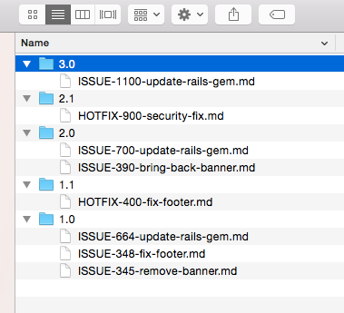
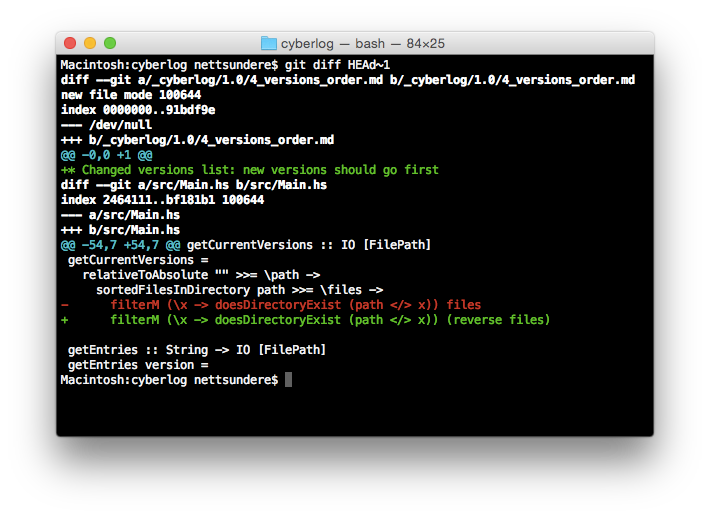
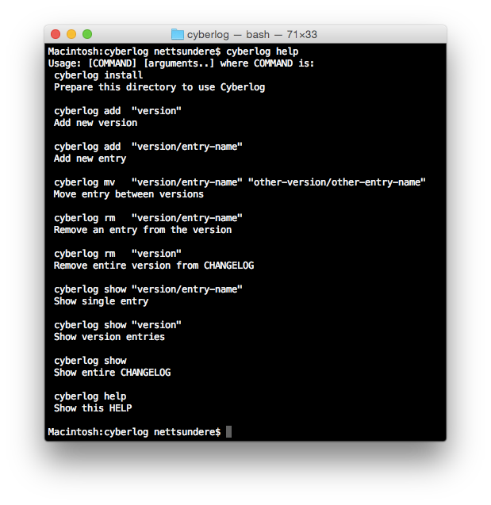

Существует немало попыток сократить количество конфликтов в changelog. Ни одна из них у меня не работает. Кроме одной новой.
tl;dr На помощь приходит структура каталогов: https://github.com/nettsundere/cyberlog
- Кто-то использует заглушки (placeholders). Хорошая идея.
«В GitLab мы решили эту проблему, добавив 100 строк с простым дефисом-заглушкой в начало changelog.» https://about.gitlab.com/2015/02/10/gitlab-reduced-merge-conflicts-by-90-percent-with-changelog-placeholders/
- Кто-то использует другую стратегию слияния для одного файла (merge=union). Это хорошая идея, когда каждая строка вашего changelog всегда уникальна. И плохая, когда в changelog есть не очень уникальные окончания. Тогда всё может просто пойти не так. И никто этого не заметит. Все похожие строки могут быть молча слиты в одну при разрешении конфликта.
Иногда я просто трачу часы своего времени на исправление конфликтов слияния в CHANGELOG. Да. Давайте исправим это с помощью двумерного файлового хранилища под названием папки.
Мы связываем одну фичу с её записью в changelog (файлом), принадлежащей некоторой версии (папке).

Теперь мы можем легко управлять этими изменениями changelog. Мы можем откатить коммит фичи. Ничего плохого не происходит. Мы можем добавлять фичи в ту же ветку вообще без конфликтов. Запись changelog может быть настолько сложной, насколько вам захочется.
Теперь можно перестать добавлять пробелы, съеденные настройками вашего редактора, лишь бы не мешать чужим изменениям. Теперь люди могут быть счастливы вместо того, чтобы делать rebase каждый раз, когда вы принимаете очередной pull request.

Необходимое ПО
На самом деле для этой стратегии не нужно никакого ПО. Но хорошо бы видеть весь changelog или версию целиком. Поэтому я решил создать проект под названием «Cyberlog».

Пока здесь ограниченный набор возможностей. Вы можете работать с записями и версиями. Можно посмотреть изменения какой-то версии, записи или все изменения сразу.
Что предстоит сделать
- Настройка через шаблонизатор (интеграция для хипстеров)
- Интеграция с SCM (git-blame и прочее)
- Опция конвертации (полезно, чтобы перенести старый CHANGELOG в новый, поддерживаемый Cyberlog)
- Разные презентеры (вдруг вам нужен pdf?)
Чего делать не стоит
- Функцию редактирования записи. Вам следует использовать свой любимый текстовый редактор для правки логов. Даже photoshop выглядит неплохо. Я могу представить changelog, наполненный осмысленными картинками, видео и аудио, объясняющими изменения.
Исходный код проекта (BSD3) доступен здесь: https://github.com/nettsundere/cyberlog
Изначально опубликовано на Medium: https://medium.com/@nettsundere/on-reducing-changelog-merge-conflicts-1eb23552630b